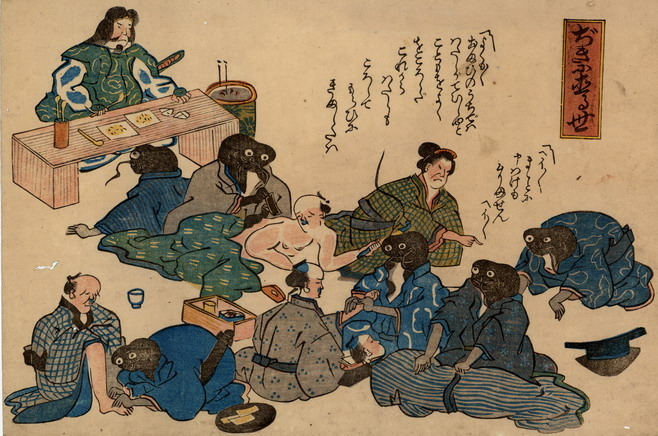

鹿島大明神の命令をうけて、鯰たちが震災に苦しむ人々に謝ったり、足や腰をもんでねぎらったりしている。鯰たちは着物を着ており、向かって一番右手の鯰の着物は青地に瓢箪の柄が描かれている。袖から出ている腕は黒いが、人間のものである。鹿島大明神は、医者の格好をしている。
出典：親書誌：U426_nichibunken_0178：ぢきに直る世；ジキニナオルヨ／日付：2010／資源識別子：U426_nichibunken_0178_0001_0000
Copyright (c)2010- International Research Center for Japanese Studies, Kyoto, Japan. All rights reserved.